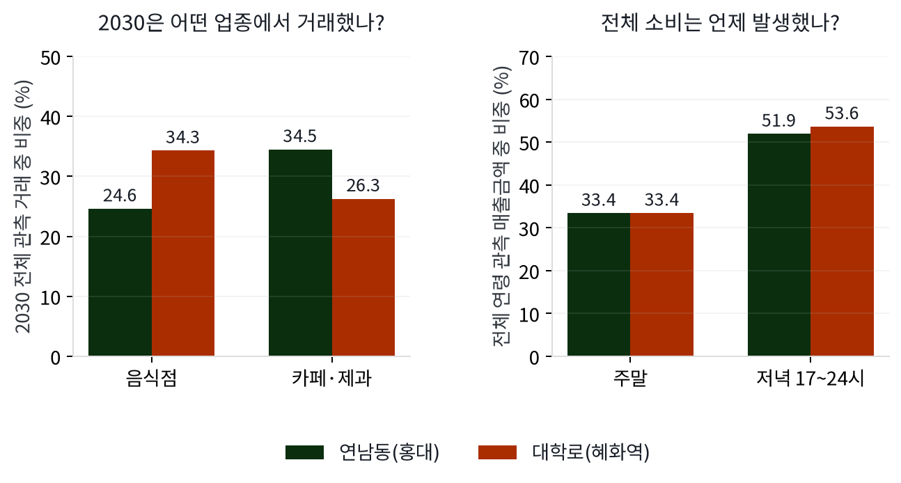

연남동과 대학로를 잇는 소비의 공통점
연남동(홍대)을 기준으로 한 저장 추천 목록에서 대학로(혜화역)는 다른 자치구 후보 중 거리순 1위입니다. 두 곳 모두 D07 청년·저녁 복합소비형에 속합니다. 이 순위는 소비 특성의 거리이며 방문 만족도 순위가 아닙니다.

읽을 수 있는 공통점
2030 거래에서 음식점·카페·제과 합계는 연남동 59.1%, 대학로 60.6%입니다. 전체 연령 주말 금액 비중은 모두 33.4%, 저녁 금액 비중은 51.9%와 53.6%입니다.
같지는 않은 부분
음식점 비중은 24.6%와 34.3%, 카페·제과는 34.5%와 26.3%입니다. 여러 소비 특성이 종합적으로 가깝다는 뜻이며 개인 취향이나 동네 분위기를 직접 측정한 결과는 아닙니다.
동네를 발견한 다음, 실제로 갈 매장을 찾도록
분석이 알려주는 것은 비슷한 소비 패턴의 지역입니다. 사용자가 실제 방문 후보를 고르려면 매장 위치·운영·일정처럼 행동으로 이어지는 정보가 더 필요합니다.
| 단계 | 사용자에게 보여줄 정보 | 정보의 상태 |
|---|---|---|
| 비슷한 상권 찾기 | 기준 상권과 닮은 다른 동네·추천 이유 | 저장된 분석 결과 |
| 그 동네에서 할 일 발견 | 주변 관심 업종 매장과 주소 | 지역검색 결과 · 운영 여부 별도 확인 |
| 로컬 브랜드·팝업 혜택 | 확인된 일정·위치·예약·쿠폰 조건 | 별도 수집·제휴 후 제공할 기능 |
사용자 가치
익숙한 동네 밖에서 새 방문 후보를 찾고, 어디를 실제로 갈지 판단할 정보를 얻을 수 있습니다.
브랜드 가치
방문지를 고르는 중인 사용자에게 매장과 행사를 알릴 접점을 얻습니다. 관심·방문 증가가 이미 확인된 것은 아닙니다.
가상 사용자 시나리오
연남동을 선택한 이용자에게 같은 대학로 추천을 보여줍니다. A는 상권 정보만, B는 가상 브랜드 A의 일정·위치·혜택을 더해 어떤 정보가 선택에 필요한지 확인합니다. 가상 정보는 테스트 예시이며 실제 팝업·제휴가 아닙니다.
실제 쿠폰 사용이 확인된 건에 비용을 받는 방식
브랜드와 합의한 건당 비용을 매장 실사용이 확인된 유효 쿠폰 수에 곱해 정산하는 방식을 제안합니다. 현재 실제 제휴나 쿠폰 발급·정산 기능은 운영하지 않습니다.
| 운영 원칙 | 제안 내용 |
|---|---|
| 소비 추천과 제휴 노출 구분 | 제휴 때문에 상권 유사성 순위를 바꾸지 않고 제휴 정보를 표시 |
| 정산 기준 | 사용이 확인된 유효 쿠폰 수 × 합의한 건당 비용 |
| 예외 처리 | 중복·취소·환불을 제외하거나 차감하고 매장 확인 근거 기록 |
| 사업성 판단 | 수수료뿐 아니라 할인 부담·운영비·공통 고정비를 함께 확인 |
가상 계산 예시 · 실측 성과 아님
기존 비용 시뮬레이션의 기준 가정은 매장 1곳의 노출 1,000회 → 클릭 100회 → 쿠폰 발급 50건 → 사용 10건입니다. 사용당 비용을 가상으로 1,000원에 두면 서비스 수수료는 10,000원입니다. 이용자 수·전환율·단가는 시장 평균이나 실제 계약값이 아닙니다.
수익과 효과는 따로 확인
수수료는 이익과 다릅니다. 쿠폰을 사용한 사람이 원래 방문할 고객일 수 있어 쿠폰 사용만으로 신규 방문이나 순증 매출을 주장하지 않습니다.
관심·사용·효과를 나누어 확인
먼저 추천 이유가 이해되는지와 방문 후보를 고르는 데 필요한 정보를 점검합니다. 이후 실제 매장·행사·제휴가 확보되면 행동 지표와 비용을 측정합니다.
| 확인 항목 | 방법 | 현재 상태 |
|---|---|---|
| 추천 자체의 유용성(H5) | 같은 후보 조건의 무작위·근거리 추천과 방문 고려 평가 비교 | 미검증 |
| 상세 클릭률 | 상세 클릭 사용자×행사 수 ÷ 노출 사용자×행사 수 | 미측정 |
| 쿠폰 사용률 | 취소·환불을 제외한 실사용 쿠폰 ÷ 같은 발급 집단의 유효 발급 쿠폰 | 미측정 |
| 방문·매출 효과 | 비교 조건을 정한 실제 제휴 실험과 매장 자료 확인 | 미검증 |
추가로 필요한 데이터
매장 ID·주소·운영 확인 출처, 팝업 시작·종료·운영 시간, 제휴 유효기간·사용 조건, 노출·클릭·발급·실사용 기록이 필요합니다. 지역검색만으로 독립 브랜드·실제 팝업·제휴 여부를 확정하지 않습니다.
비교할 때 지킬 기준
상세·쿠폰이 없는 A 화면의 클릭률과 사용률을 0%로 놓고 B와 비교하지 않습니다. 분모가 0이면 ‘평가 불가’로 표시합니다. 쿠폰은 기한이 끝난 같은 발급 집단으로 집계하고, 만료된 미사용 쿠폰도 분모에 포함합니다. 2030 평가와 다른 연령 사용성 평가를 나눕니다.
지도에서 닮은 동네를 둘러보세요.
상권의 소비 특징과 추천 이유를 확인하고, 관심 있는 업종의 매장을 탐색할 수 있습니다. 실제 팝업·제휴 혜택은 별도 확인과 연결이 필요한 제안 단계입니다.
서울 상권 지도 열기근거와 해석 범위
소비 수치는 저장된 실제 사례이며 매장·팝업·제휴는 확인 후 제공할 확장 제안입니다. 비용 계산은 기존 가상 시뮬레이션의 설계값으로 실제 성과·시장 단가가 아닙니다. 쿠폰 실사용·방문·매출 효과는 미측정입니다.